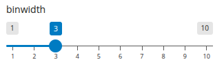

my_custom_module_srv <- function(id, data) {
moduleServer(id, function(input, output, session) {
# ... existing code ...
# add plot call to qenv
result <- reactive({
req(input$variable)
within(
data(),
{
plot <- ggplot(ADSL, aes(x = input_var)) +
geom_histogram(binwidth = input_binwidth)
plot
},
input_var = as.name(input$variable),
input_binwidth = input$binwidth
)
})
# ... existing code ...
})
}Topic 7: Creating a custom teal module (20 minutes)
A teal module consists of two main components, similar to a Shiny module:
- UI function - defines the user interface
- Server function - contains the server logic
The key difference from a standard Shiny module is that the server function now has a data parameter:
- This parameter is reactive and contains a
teal_dataobject - The
teal_dataobject holds all the datasets available in the teal application - Access datasets using
data()[["dataset_name"]]
Basic structure of a teal_module
my_module_ui <- function(id) {
ns <- NS(id)
# Define UI elements with proper namespacing
}
my_module_srv <- function(id, data) {
moduleServer(id, function(input, output, session) {
# data parameter contains reactive teal_data object
# Access datasets: data()[["ADSL"]], data()[["ADAE"]], etc.
})
}
# Create the module from UI and server functions
my_module <- teal::module(
label = "Module Label",
ui = my_module_ui,
server = my_module_srv
)Base functionality of our custom module
Let’s create a custom module that shows a simple histogram plot based on user selected columns.
-
UI function should contain (wrapped in
shiny::tags$div()):- A variable selector (using
shiny::selectInput()) - A plot output (using
shiny::plotOutput())
- A variable selector (using
-
Server should:
- Update the variable selector choices based on numeric columns from the
ADSLdataset- Using
shiny::updateSelectInput()to set choices ofdata()[["ADSL"]]numeric columns - Helper snippet:
data()[["ADSL"]] |> dplyr::select(where(is.numeric)) |> names()
- Using
- Create a histogram plot using
ggplot2based on the selected variable (Usingggplot2::geom_histogram())- Helper snippet:
ggplot(ADSL, aes(x = selected_variable)) + geom_histogram()
- Helper snippet:
- Update the variable selector choices based on numeric columns from the
ℹ️ Good to know:
- Use
teal.code::within()to create reproducible code inside reactive expression and return it at the end. -
teal_datacode is not aware of shiny inputs- Use named parameters in
within()to pass shiny inputs
- Use named parameters in
Initial teal module code
See folder
exercice_7for the code to start with
library(teal)
library(dplyr)
library(ggplot2)
my_custom_module_ui <- function(id) {
ns <- NS(id)
tags$div(
selectInput( # variable selector
inputId = ns("variable"),
label = "Select variable",
choices = NULL # initialize empty - to be updated from within server
),
plotOutput(ns("plot")) # Output for the plot
)
}
my_custom_module_srv <- function(id, data) {
moduleServer(id, function(input, output, session) {
updateSelectInput( # update variable selector by names of data
inputId = "variable",
choices = data()[["ADSL"]] |> select(where(is.numeric)) |> names()
)
# add plot call to qenv
result <- reactive({
req(input$variable)
within(
data(),
{
plot <- ggplot(ADSL, aes(x = input_var)) + geom_histogram()
},
input_var = as.name(input$variable) # Pass the selected variable as a symbol
)
})
# render to output the object from qenv
output$plot <- renderPlot(result()[["plot"]])
result
})
}
my_custom_module <- module(
label = "My Custom Module",
ui = my_custom_module_ui,
server = my_custom_module_srv
)
data <- teal_data()
data <- within(data, {
ADSL <- pharmaverseadam::adsl
})
app <- init(
data = data,
modules = list(my_custom_module)
)
shinyApp(app$ui, app$server)App running
#| '!! shinylive warning !!': |
#| shinylive does not work in self-contained HTML documents.
#| Please set `embed-resources: false` in your metadata.
#| standalone: true
#| viewerHeight: 680
library(teal)
library(dplyr)
library(ggplot2)
my_custom_module_ui <- function(id) {
ns <- NS(id)
tags$div(
selectInput( # variable selector
inputId = ns("variable"),
label = "Select variable",
choices = NULL # initialize empty - to be updated from within server
),
plotOutput(ns("plot")) # Output for the plot
)
}
my_custom_module_srv <- function(id, data) {
moduleServer(id, function(input, output, session) {
updateSelectInput( # update variable selector by names of data
inputId = "variable",
choices = data()[["ADSL"]] |> select(where(is.numeric)) |> names()
)
# add plot call to qenv
result <- reactive({
req(input$variable)
within(
data(),
{
plot <- ggplot(ADSL, aes(x = input_var)) + geom_histogram()
},
input_var = as.name(input$variable) # Pass the selected variable as a symbol
)
})
# render to output the object from qenv
output$plot <- renderPlot(result()[["plot"]])
result
})
}
my_custom_module <- module(
label = "My Custom Module",
ui = my_custom_module_ui,
server = my_custom_module_srv
)
data <- teal_data()
data <- within(data, {
ADSL <- pharmaverseadam::adsl
})
app <- init(
data = data,
modules = list(my_custom_module)
)
shinyApp(app$ui, app$server)🛠️ Exercise
Let’s enhance the module:
-
Let’s create a new parameter
binwidth:
- add a new widget to the UI
- that widget may be created with
shiny::sliderInput() - make reasonable values of
min,max,stepand initialvalue
- that widget may be created with
- read and use that widget in server
- pass this parameter value as
binwidthargument to thegeom_histogram()function
- pass this parameter value as
Answermy_custom_module_ui <- function(id) { # ... existing code ... tags$div( # ... existing code ..., sliderInput( inputId = ns("binwidth"), label = "binwidth", min = 1, max = 10, step = 1, value = 3 ), # ... existing code ... ) }my_custom_module_srv <- function(id, data) { moduleServer(id, function(input, output, session) { # ... existing code ... # add plot call to qenv result <- reactive({ req(input$variable) within( data(), { plot <- ggplot(ADSL, aes(x = input_var)) + geom_histogram(binwidth = input_binwidth) plot }, input_var = as.name(input$variable), # Pass the selected variable as a symbol input_binwidth = input$binwidth ) }) # ... existing code ... }) } - add a new widget to the UI
-
Let’s add reporter functionality to module
Add UI elements to UI function with
teal.reporter::simple_reporter_ui(id),-
Add arguments called
reporterandfilter_panel_apito server function- Flag
tealthat module supports reporter
- Flag
-
Create reporter in server function
with_filter <- !rlang::is_missing(filter_panel_api) && inherits(filter_panel_api, "FilterPanelApi") card_fun <- function(card = teal.reporter::ReportCard$new(), comment) { card$set_name("My custom module") card$append_text(filter_panel_api$get_filter_state(), "verbatim") card$append_text(paste("Selected var:", input$variable)) card$append_text(paste("Selected binwidth:", input$binwidth)) card$append_plot(result()$plot) }
Answermy_custom_module_ui <- function(id) { # ... existing code ... tags$div( # ... existing code ..., teal.reporter::simple_reporter_ui(ns("reporter")), # ... existing code ... ) }
🛠️ Bonus Exercise (add more datasets)
-
Let’s add more datasets
- extend
datawithADAE = teal.pharmaverse::adae - add a new widget in the UI
- that widget should be created with
shiny::selectInput() - initialize empty and update values in the same way as for
input$variable
- that widget should be created with
- read and use in the server
- modify the variable selection - it has to be chosen from the currently selected dataset
- convert to
observeEvent()oninput$dataset - add at the beggining:
req(input$dataset)to assure non empty selection - modify to
choices = names(data()[[input$dataset]])
- convert to
- modify the observer call
- add
req(input$dataset) - add
req(input$variables %in% names(data()[[input$dataset]]))
- add
- modify ggplot call
- convert the value to a symbol and use as a first argument of
ggplot()
- convert the value to a symbol and use as a first argument of
- modify the variable selection - it has to be chosen from the currently selected dataset
Answermy_custom_module_srv <- function(id, data) { moduleServer(id, function(input, output, session) { # ... existing code ... updateSelectInput( inputId = "dataset", choices = names(data()) ) observeEvent( input$dataset, { req(input$dataset) updateSelectInput( inputId = "variable", choices = data()[[input$dataset]] |> select(where(is.numeric)) |> names() ) } ) # Update reactive and render function result <- reactive({ req(input$dataset) req(input$variable) within( data(), { my_plot <- ggplot(input_dataset, aes(x = input_var)) + geom_histogram() my_plot }, input_dataset = as.name(input$dataset), input_var = as.name(input$variable) ) }) output$plot <- renderPlot({ result()[["my_plot"]] }) }) } - extend
📚 What did we learn?
- How to create a custom teal module
- How to interact with
teal_dataobject in the module server - How to enable reproducible code and reporting features
🌐 References
teal::module()- “Creating Custom Modules” vignette
-
"qenv"article on how to interact with internalqenvobject - in particular:teal.code::within()function